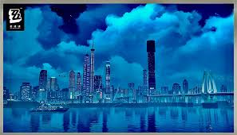
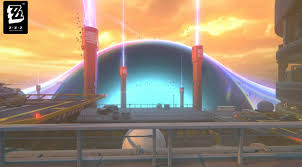
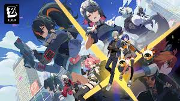
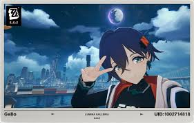

Explora el mundo postapocalíptico de New Eridu
Hace más de 140 años, una gran guerra desencadenó la Primera Desastre Hollow, donde anomalías sobrenaturales conocidas como Hollows comenzaron a devorar la civilización. La humanidad se refugió en ciudades como New Eridu, el último bastión contra estas catástrofes. Zenless Zone Zero, desarrollado por HoYoverse, captura esta era postapocalíptica en un RPG de acción lanzado en 2024.
Hace 11 años, Hollow Zero se expandió rápidamente, consumiendo la antigua capital. Eventos clave incluyen la intervención fallida de la Fuerza de Defensa de Eridu, sacrificios heroicos como el de Yijiang con la Espada Qingming, y la detonación de los Pilares Shiyu para crear El Abismo, salvando a New Eridu.
Anunciado en 2022, Zenless Zone Zero generó expectación con su estilo visual cyberpunk y mecánicas de combate innovadoras. Varias betas cerradas en 2023 permitieron refinar la jugabilidad, incorporando feedback sobre exploración en Hollows y sistema de proxies.
Lanzado en julio de 2024 para PC, consolas y móviles, el juego incluyó eventos de lanzamiento como "Rookie on the Road", recompensando a nuevos jugadores con agentes como Ben Bigger.
Zenless Zone Zero cuenta con una rica galería de agentes jugables. Aquí una selección de los más icónicos:
La narrativa se desarrolla a través de comisiones principales y eventos:
Elogiado por su narrativa inmersiva y personajes carismáticos, ZZZ ha atraído millones de jugadores. Actualizaciones regulares, como la versión 2.2 en septiembre 2025, mantienen el engagement con nuevos eventos y agentes.
El juego ha influido en la cultura pop, con colaboraciones y memes sobre proxies como Wise y Belle. Su exploración de temas postapocalípticos resuena globalmente.